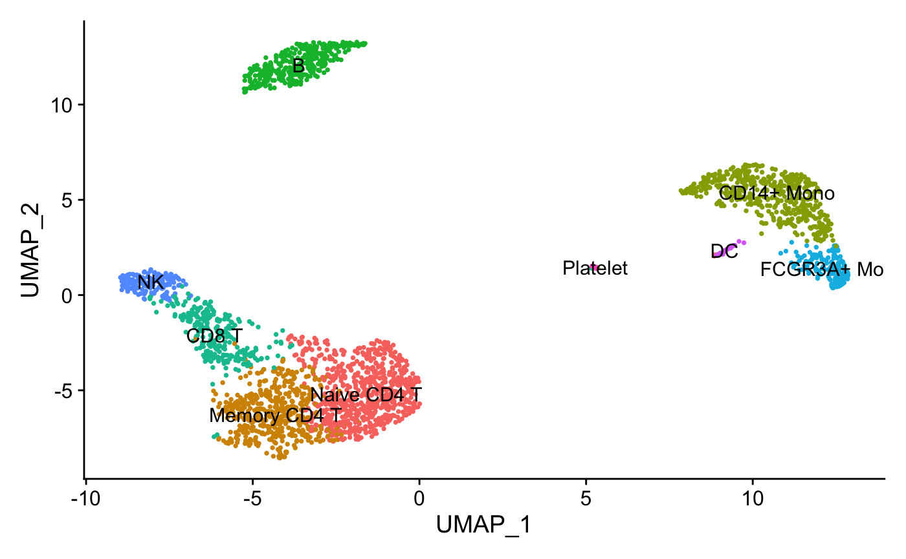
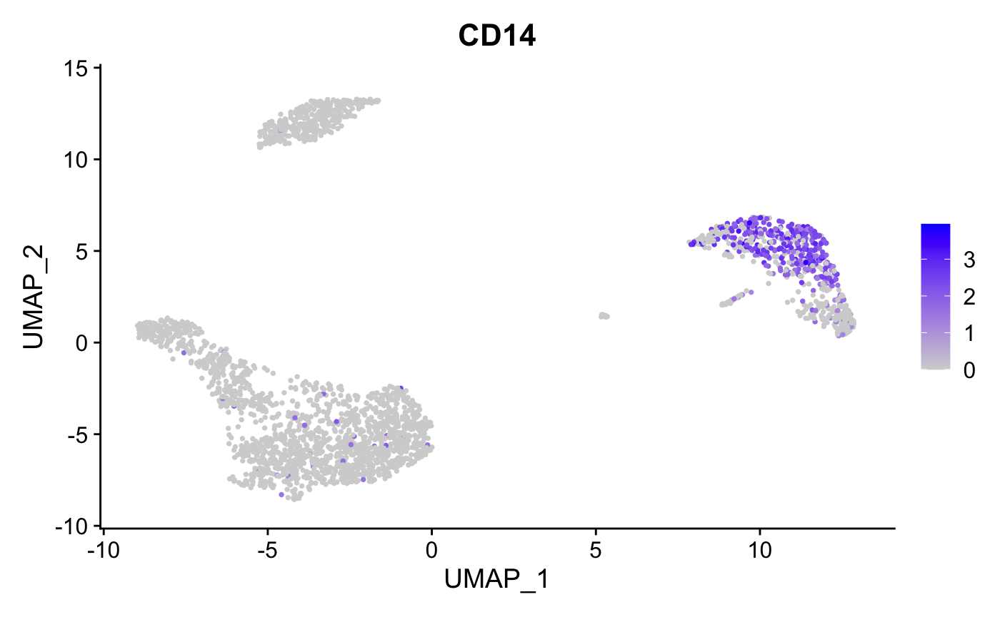
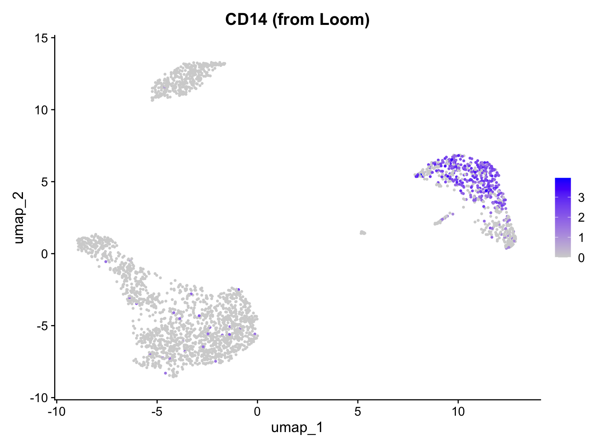

This vignette demonstrates how to convert between Seurat objects and Loom files using scConvert. The Loom format is an HDF5-based file format commonly used for storing single-cell RNA-seq data, particularly in RNA velocity workflows with tools like velocyto and scVelo.
Loom File Format Overview
Loom files organize single-cell data in a specific HDF5 structure:
-
/matrix: Main expression matrix (genes × cells, transposed from Seurat convention) -
/row_attrs: Gene/feature-level metadata (gene names, coordinates, etc.) -
/col_attrs: Cell/sample-level metadata (cell IDs, cluster labels, etc.) -
/layers: Additional expression layers (counts, normalized data, spliced/unspliced for velocity)
This format is particularly useful for:
- RNA velocity analysis: velocyto and scVelo store spliced/unspliced counts in layers
- Python interoperability: loompy package provides fast access in Python
- Archival storage: Self-contained format with all annotations
Converting from Seurat to Loom
Basic Conversion
To save a Seurat object as a Loom file, use
writeLoom():
library(SeuratData)
if (!"pbmc3k.final" %in% rownames(InstalledData())) {
InstallData("pbmc3k")
}
data("pbmc3k.final", package = "pbmc3k.SeuratData")
pbmc <- UpdateSeuratObject(pbmc3k.final)
pbmc
#> An object of class Seurat
#> 13714 features across 2638 samples within 1 assay
#> Active assay: RNA (13714 features, 2000 variable features)
#> 3 layers present: counts, data, scale.data
#> 2 dimensional reductions calculated: pca, umap
FeaturePlot(pbmc, features = "CD14", pt.size = 0.5)
Now save to Loom format:
writeLoom(pbmc, filename = "pbmc3k.loom", overwrite = TRUE, verbose = TRUE)What Gets Saved
When saving a Seurat object to Loom:
| Seurat Data | Loom Location | Notes |
|---|---|---|
| Default assay data | /matrix |
Normalized expression |
| Counts layer | /layers/counts |
Raw counts if different from data |
| Scale.data | /layers/scale.data |
Scaled data if present |
| Cell names | /col_attrs/CellID |
Cell barcodes |
| Gene names | /row_attrs/Gene |
Feature names |
| Cell metadata | /col_attrs/* |
All columns from meta.data
|
| Feature metadata | /row_attrs/* |
All columns from assay meta.features |
| Dimensional reductions | /reductions/* |
PCA, UMAP embeddings, etc. |
| Graphs | /col_graphs/* |
SNN graphs if present |
Viewing Loom Files in Python
The saved Loom file can be opened with loompy or scanpy in Python:
import loompy
# Connect to the loom file
with loompy.connect("pbmc3k.loom") as ds:
print(f"Shape: {ds.shape[0]} genes x {ds.shape[1]} cells")
print(f"\nRow attributes (genes): {list(ds.ra.keys())}")
print(f"\nColumn attributes (cells): {list(ds.ca.keys())[:10]}...") # First 10
print(f"\nLayers: {list(ds.layers.keys())}")
#> Shape: 13714 genes x 2638 cells
#>
#> Row attributes (genes): ['Gene', 'vst.mean', 'vst.variable', 'vst.variance', 'vst.variance.expected', 'vst.variance.standardized']
#>
#> Column attributes (cells): ['CellID', 'RNA_snn_res.0.5', 'nCount_RNA', 'nFeature_RNA', 'orig.ident', 'percent.mt', 'seurat_annotations', 'seurat_clusters']...
#>
#> Layers: ['', 'counts', 'scale.data']With scanpy:
import scanpy as sc
# Read loom file as AnnData
adata = sc.read_loom("pbmc3k.loom", sparse=True, cleanup=False)
print(adata)
#> AnnData object with n_obs × n_vars = 2638 × 13714
#> obs: 'RNA_snn_res.0.5', 'nCount_RNA', 'nFeature_RNA', 'orig.ident', 'percent.mt', 'seurat_annotations', 'seurat_clusters'
#> var: 'vst.mean', 'vst.variable', 'vst.variance', 'vst.variance.expected', 'vst.variance.standardized'
#> layers: 'counts', 'scale.data'
print("\nColumn attributes:", list(adata.obs.columns)[:10])
#>
#> Column attributes: ['RNA_snn_res.0.5', 'nCount_RNA', 'nFeature_RNA', 'orig.ident', 'percent.mt', 'seurat_annotations', 'seurat_clusters']Converting from Loom to Seurat
Loading Loom Files
Use readLoom() to read a Loom file as a Seurat
object:
# Load the loom file we just created
loaded_pbmc <- readLoom("pbmc3k.loom", verbose = TRUE)
loaded_pbmc
#> An object of class Seurat
#> 13714 features across 2638 samples within 1 assay
#> Active assay: RNA (13714 features, 0 variable features)
#> 2 layers present: counts, data
#> 1 dimensional reduction calculated: umap
# Verify dimensions match
cat("Original:", ncol(pbmc), "cells,", nrow(pbmc), "genes\n")
#> Original: 2638 cells, 13714 genes
cat("Loaded: ", ncol(loaded_pbmc), "cells,", nrow(loaded_pbmc), "genes\n")
#> Loaded: 2638 cells, 13714 genes
# Check metadata was preserved
cat("\nMetadata columns preserved:\n")
#>
#> Metadata columns preserved:
print(intersect(colnames(pbmc[[]]), colnames(loaded_pbmc[[]])))
#> [1] "orig.ident" "nCount_RNA" "nFeature_RNA"
#> [4] "seurat_annotations" "percent.mt" "RNA_snn_res.0.5"
#> [7] "seurat_clusters"Visualize loaded data
# Loom does not preserve UMAP embeddings, so we show expression data
FeaturePlot(loaded_pbmc, features = "CD14", pt.size = 0.5) + ggtitle("CD14 (from Loom)")
readLoom Parameters
readLoom() provides several options for customizing the
import:
readLoom(
file, # Path to loom file
assay = NULL, # Name for the assay (default: "RNA" or from file)
cells = "CellID", # Column attribute containing cell names
features = "Gene", # Row attribute containing gene names
normalized = NULL, # Layer to load as normalized data
scaled = NULL, # Layer to load as scaled data
filter = "none", # Filter cells/features by Valid attributes
verbose = TRUE # Show progress messages
)Loading Specific Layers
If your Loom file has additional layers (e.g., from velocyto):
# Load with specific layers
seurat_obj <- readLoom(
"velocity_data.loom",
normalized = "spliced", # Use spliced counts as normalized
scaled = "ambiguous" # Optional scaled layer
)Loading velocyto Output
Loom files from velocyto contain spliced, unspliced, and ambiguous count matrices:
# Load velocyto loom file
# The main matrix typically contains spliced counts
velocity_obj <- readLoom(
"sample.loom",
cells = "CellID",
features = "Gene"
)
# The spliced/unspliced/ambiguous layers can be accessed after loading
# or you may need to load them separately depending on your analysis needsRound-Trip Conversion
scConvert preserves data integrity during Seurat ↔︎ Loom conversion:
# Create a simple test object
set.seed(42)
test_obj <- CreateSeuratObject(
counts = pbmc[["RNA"]]$counts[1:100, 1:50],
project = "RoundTrip"
)
test_obj$custom_cluster <- sample(c("A", "B", "C"), 50, replace = TRUE)
test_obj$numeric_value <- rnorm(50)
# Save and reload
writeLoom(test_obj, "test_roundtrip.loom", overwrite = TRUE, verbose = FALSE)
reloaded <- readLoom("test_roundtrip.loom", verbose = FALSE)
# Compare
cat("Cell names match:", all(colnames(test_obj) == colnames(reloaded)), "\n")
#> Cell names match: TRUE
cat("Gene names match:", all(rownames(test_obj) == rownames(reloaded)), "\n")
#> Gene names match: TRUE
cat("Metadata columns:", paste(colnames(reloaded[[]]), collapse = ", "), "\n")
#> Metadata columns: orig.ident, nCount_RNA, nFeature_RNA, custom_cluster, numeric_valueVerify expression data is preserved:
original_data <- GetAssayData(test_obj, layer = "data")
reloaded_data <- GetAssayData(reloaded, layer = "data")[
rownames(original_data),
colnames(original_data)
]
max_diff <- max(abs(as.matrix(original_data) - as.matrix(reloaded_data)))
cat("Maximum expression difference:", max_diff, "\n")
#> Maximum expression difference: -InfWorking with RNA Velocity Data
A common use case for Loom files is RNA velocity analysis. Here’s a typical workflow:
1. Generate Loom with velocyto
# Run velocyto on Cell Ranger output (command line)
velocyto run10x -m repeat_mask.gtf sample_dir genes.gtfThis creates a .loom file with spliced/unspliced
counts.
2. Load in R for QC and Annotation
# Load velocyto output
velocity_data <- readLoom("sample.loom")
# Perform standard Seurat QC and clustering
velocity_data <- NormalizeData(velocity_data)
velocity_data <- FindVariableFeatures(velocity_data)
velocity_data <- ScaleData(velocity_data)
velocity_data <- RunPCA(velocity_data)
velocity_data <- FindNeighbors(velocity_data)
velocity_data <- FindClusters(velocity_data)
velocity_data <- RunUMAP(velocity_data, dims = 1:30)
# Add cell type annotations
velocity_data$cell_type <- ... # Your annotation method
# Save back to loom with annotations
writeLoom(velocity_data, "sample_annotated.loom", overwrite = TRUE)3. Continue Velocity Analysis in Python
import scvelo as scv
# Load annotated loom file
adata = scv.read("sample_annotated.loom")
# Run velocity analysis
scv.pp.filter_and_normalize(adata)
scv.pp.moments(adata)
scv.tl.velocity(adata)
scv.tl.velocity_graph(adata)
# Visualize with Seurat annotations
scv.pl.velocity_embedding_stream(adata, color='cell_type')Data Mapping Reference
Seurat to Loom
| Seurat Location | Loom Location | Notes |
|---|---|---|
GetAssayData(layer = "data") |
/matrix |
Main expression matrix |
GetAssayData(layer = "counts") |
/layers/counts |
If different from data |
GetAssayData(layer = "scale.data") |
/layers/scale.data |
If present |
colnames(obj) |
/col_attrs/CellID |
Cell barcodes |
rownames(obj) |
/row_attrs/Gene |
Gene names |
obj[[]] (meta.data) |
/col_attrs/* |
Each column as attribute |
obj[[assay]][[]] |
/row_attrs/* |
Feature metadata |
Embeddings(obj, "pca") |
/reductions/pca/embeddings |
Transposed |
Loadings(obj, "pca") |
/reductions/pca/loadings |
If present |
Stdev(obj, "pca") |
/reductions/pca/stdev |
If present |
Loom to Seurat
| Loom Location | Seurat Destination | Notes |
|---|---|---|
/matrix |
data layer |
Stored as counts if no normalization detected |
/layers/* |
Additional layers | Via normalized/scaled parameters |
/col_attrs/CellID |
Cell names | Configurable via cells parameter |
/row_attrs/Gene |
Feature names | Configurable via features parameter |
/col_attrs/* |
meta.data |
All except CellID and Valid |
/row_attrs/* |
meta.features |
All except Gene and Valid |
/reductions/*/embeddings |
Reductions() |
If present |
/col_graphs/* |
Graphs() |
SNN/KNN graphs |
Comparison with Other Formats
| Feature | Loom | h5Seurat | h5ad |
|---|---|---|---|
| Primary ecosystem | velocyto, loompy | Seurat | scanpy |
| Multiple assays | Via layers | Native support | Single X matrix |
| Spatial data | Limited | Full support | Full support |
| RNA velocity | Native | Not standard | Via layers |
| Graph storage | Native | Native | In obsp |
| Python access | loompy, scanpy | Limited | scanpy |
| R access | scConvert | scConvert | scConvert |
When to use Loom:
- RNA velocity analysis with velocyto/scVelo
- Workflows requiring loompy compatibility
- Simpler single-assay datasets
When to use h5Seurat:
- Seurat-native workflows
- Multi-modal data (CITE-seq)
- Full Seurat object preservation
When to use h5ad:
- scanpy-based workflows
- Spatial transcriptomics with squidpy
- CellxGene data sharing
Troubleshooting
Common Issues
“Cannot find feature names dataset”
The Loom file uses non-standard attribute names. Specify them explicitly:
# Check what attributes exist
h5 <- hdf5r::H5File$new("data.loom", mode = "r")
print(names(h5[["row_attrs"]]))
h5$close_all()
# Use the correct attribute name
obj <- readLoom("data.loom", features = "gene_name")“Cannot find cell names dataset”
Similar to above, check column attributes:
h5 <- hdf5r::H5File$new("data.loom", mode = "r")
print(names(h5[["col_attrs"]]))
h5$close_all()
# Use the correct attribute name
obj <- readLoom("data.loom", cells = "obs_names")Duplicate feature names
Loom files sometimes have duplicate gene names. scConvert will make them unique with a warning:
# Warning: Duplicate feature names found, making unique
obj <- readLoom("data.loom")
# The names will be Gene, Gene.1, Gene.2, etc.